A group of 8 moving robotic vehicles which are in random positions in a space (cube) 100Χ100Χ100 meters.
Using the attractive/repulsive function (2.2) from V. Gazi [1] with a = 1, b = 20, and c = 0.2, show the trajectories in 3D space of the moving vehicles.
First, we draw the cube of dimensions 100x100x100 and place inside it the 8 robotic vehicles in random positions chosen using the pseudorandom number generator, rand.
So, we have the following code:
Code:
a=1;
b=20;
c=0.2;
er=(b/a)*sqrt(c/2)*exp(-0.5);
xd=zeros(8,1);
yd=zeros(8,1);
zd=zeros(8,1);
%% Cube
axis equal
Xplot=[0 100 100 0 0];
Yplot=[0 0 100 100 0];
Zplot=[0 0 0 0 0];
plot3(Xplot,Yplot,Zplot,'k');
hold on
Zplot=[100 100 100 100 100];
plot3(Xplot,Yplot,Zplot,'k');
Xplot=[0 0];
Yplot=[0 0];
Zplot=[0 100];
hold on
plot3(Xplot,Yplot,Zplot,'k');
Xplot=[100 100];
Yplot=[0 0];
hold on
plot3(Xplot,Yplot,Zplot,'k');
Xplot=[0 0];
Yplot=[100 100];
hold on
plot3(Xplot,Yplot,Zplot,'k');
Xplot=[100 100];
Yplot=[100 100];
hold on
plot3(Xplot,Yplot,Zplot,'k');
hold on
%% Initial positions
Xrobots=100*rand(8,1);
Yrobots=100*rand(8,1);
Zrobots=100*rand(8,1);
plot3(Xrobots,Yrobots,Zrobots,'gv');
This initial state is shown below:
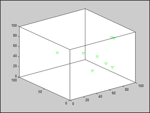
We then calculate the trajectories of the 8 robotic vehicles by applying the attractive/repulsive function g(y) from V. Gazi [1]:
g(y)=-y[𝑎-b*exp(-||y||2/c)] (1),
for a = 1, b = 20, and c = 0.2.
The function g(y) takes as input for each robotic vehicle the positions of the rest and gives us the derivative of the displacement, i.e. its velocity. This way we can find the position of the next moment in time (t+dt):
x(t+dt)=x(t)v*dt,
where v is the velocity and dt=0.01.
So, we impement the above:
Code:
max=10;
for h=0:0.01:max
for k=1:8
for l=1:8
if k~=l
% Calculation of function g
gx=-(Xrobots(k)-Xrobots(l))*(a-b*exp((-(Xrobots(k)-Xrobots(l))^2)/c));
gy=-(Yrobots(k)-Yrobots(l))*(a-b*exp((-(Yrobots(k)-Yrobots(l))^2)/c));
gz=-(Zrobots(k)-Zrobots(l))*(a-b*exp((-(Zrobots(k)-Zrobots(l))^2)/c));
xd(k)=xd(k)+gx;
yd(k)=yd(k)+gy;
zd(k)=zd(k)+gz;
end
end
% Calculation of trajectories (step 0.01sec)
Xrobots(k)=Xrobots(k)+0.01*xd(k);
Yrobots(k)=Yrobots(k)+0.01*yd(k);
Zrobots(k)=Zrobots(k)+0.01*zd(k);
end
plot3(Xrobots,Yrobots,Zrobots,'m*')
hold on
xd=zeros(1,8);
yd=zeros(1,8);
zd=zeros(1,8);
end
hold off
Running the above code, we get the trajectories of the robots for a period of 10 sec with step dt=0.01:
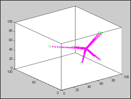
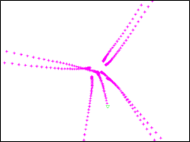
We observe that the robots move closer to each other and stop once the distance between them is reduced enough.
Verify through motion simulation the convergence to finite time on the sphere Bϵ(x̄) according to Theorem 1 [1].
According to Gazi's Theorem 1 if we have a swarm of robots which satisfy Eq. 1 will converge within the sphere Bε(x̄):
Bϵ(x̄){x:||x-x̄||≤ϵ}, where ϵ=(b/𝑎*sqrt(c/2)*exp(-1/2)) and x̄ is the center of the swarm.
In fact, this will happen in a time that will not exceed the time limit:
ṯ=maxi∈S{(-1/(2*𝑎))*ln(ϵ2/(2*Vi(0)))},
where Vi is the Lyapunov function that corresponds to robot i for t=0. Thus, we have the following code:
Code:
% Calculation of the center of the swarm
Xcenter=sum(Xrobots)/8;
Ycenter=sum(Yrobots)/8;
Zcenter=sum(Zrobots)/8;
ex=Xrobots-Xcenter;
ey=Yrobots-Ycenter;
ez=Zrobots-Zcenter;
Vx=0.5*power(ex,2);
Vy=0.5*power(ey,2);
Vz=0.5*power(ez,2);
% Calculation of the time limit (Theorem 1)
max=0;
for i=1:8
temp=-(1/(2*a))*log(er^2/(2*Vx(i)));
if temp>max
max=temp;
end
temp=-(1/(2*a))*log(er^2/(2*Vy(i)));
if temp>max
max=temp;
end
temp=-(1/(2*a))*log(er^2/(2*Vz(i)));
if temp>max
max=temp;
end
end
for h=0:0.01:max
for k=1:8
for l=1:8
if k~=l
% Calculation of function g
gx=-(Xrobots(k)-Xrobots(l))*(a-b*exp((-(Xrobots(k)-Xrobots(l))^2)/c));
gy=-(Yrobots(k)-Yrobots(l))*(a-b*exp((-(Yrobots(k)-Yrobots(l))^2)/c));
gz=-(Zrobots(k)-Zrobots(l))*(a-b*exp((-(Zrobots(k)-Zrobots(l))^2)/c));
xd(k)=xd(k)+gx;
yd(k)=yd(k)+gy;
zd(k)=zd(k)+gz;
end
end
% Calculation of trajectories(step 0.01 sec)
Xrobots(k)=Xrobots(k)+0.01*xd(k);
Yrobots(k)=Yrobots(k)+0.01*yd(k);
Zrobots(k)=Zrobots(k)+0.01*zd(k);
end
plot3(Xrobots,Yrobots,Zrobots,'m*')
hold on
xd=zeros(1,8);
yd=zeros(1,8);
zd=zeros(1,8);
end
hold off
% Drawing the sphere (Theorem 2)
[x,y,z] = sphere(50);
x = x*er + Xcenter;
y = y*er + Ycenter;
z = z*er + Zcenter;
Spherecolor = [0 0.5 0.5];
surface(x,y,z,'FaceColor', 'none','EdgeColor',Spherecolor);
Below we can see the trajectories of the robots as well as the sphere Bϵ(x̄):
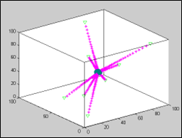
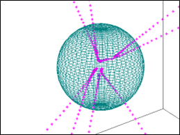
We see that all robots headed towards the sphere Bϵ(x̄) and arrived inside it in the calculated time (according to Theorem 1) [1].
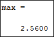
Verify through simulation that x(t)→Ωϵ according to Theorem 2 of the same Ph.D [1].
According to Gazi's Theorem 2, if we have a swarm of robots which satisfy eq. (1) after infinite time has passed (t→∞) all robots will reach specific positions and stop. So, it is sufficient to let the robots move for a long time and show that they have reached specific positions near the center of the swarm with zero velocities. We implement the above in code:
Code:
max=20;
for h=0:0.01:max
for k=1:8
for l=1:8
if k~=l
% Calculation of function g
gx=-(Xrobots(k)-Xrobots(l))*(a-b*exp((-(Xrobots(k)-Xrobots(l))^2)/c));
gy=-(Yrobots(k)-Yrobots(l))*(a-b*exp((-(Yrobots(k)-Yrobots(l))^2)/c));
gz=-(Zrobots(k)-Zrobots(l))*(a-b*exp((-(Zrobots(k)-Zrobots(l))^2)/c));
xd(k)=xd(k)+gx;
yd(k)=yd(k)+gy;
zd(k)=zd(k)+gz;
end
end
% Calculation of trajectories (step 0.01sec)
Xrobots(k)=Xrobots(k)+0.01*xd(k);
Yrobots(k)=Yrobots(k)+0.01*yd(k);
Zrobots(k)=Zrobots(k)+0.01*zd(k);
end
plot3(Xrobots,Yrobots,Zrobots,'m*')
hold on
xd=zeros(1,8);
yd=zeros(1,8);
zd=zeros(1,8);
end
hold off
% Show velocities for t->oo
xd
yd
zd
So, we get the following images:
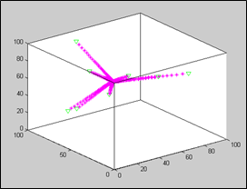
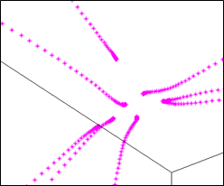
Letting the robots move for 20 sec, we notice that they have ended up in positions near the center of the swarm and remain there as they all have zero velocity (xd, yd, zd express the x, y, z components of the velocity respectively).
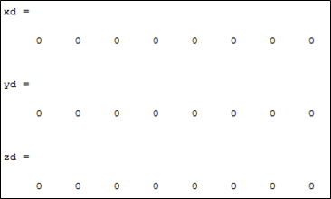
Let the same group of 8 moving robots in the same space. Let be an R8X8 symmetric matrix. The element Rij, i>j is a value drawn from a random uniform distribution from 0 to 1. The adjacency matrix G (as published in IEEE Transactions) is derived from the matrix R, where if the element Rij≥0.5, then Gij=1, otherwise equal to zero. Let the dynamics of each robotic system correspond to that of a second-order system. Implement a controller so that the symmetrically meshed system is stable and plot the trajectories of the 8 nodes, assuming that their initial connectivity remains invariant in time regardless of their spatial distance.
We start by filling the matrix R with values from 0 to 1 using the rand function again and making sure that the array we created is symmetric with the triu function. We still fill the matrix G with 1 if the corresponding element of R is ≥ 0.5 and with 0 otherwise. Each row (or column) i of G shows which robot robot i communicates with. We also create the matrix D whose main diagonal point has a value equal to the sum of all elements of the corresponding column of G and all other elements are 0. Finally, we create the Laplacian L= D-G that we will need for our control. The control we will apply is given below:
ẋ=-L*x (2)
Thus, similarly to the first question we get:
x(t+dt)=x(t)+v*dt
but with the velocity given by eq. 2. So, we write the following code:
Code:
% Calculation of matrices R,G,L
R=rand(8,8);
R=triu(R)+triu(R)';
G=zeros(8,8);
for i=1:8
for j=1:8
if i==j
R(i,j)=0;
elseif R(i,j)>=0.5
G(i,j)=1;
end
end
end
D=zeros(8,8);
for i=1:8
D(i,i)=sum(G(:,i));
end
L=D-G;
for i=1:1000
vx=-L*Xrobots;
vy=-L*Yrobots;
vz=-L*Zrobots;
Xrobots=Xrobots+0.01*vx;
Yrobots=Yrobots+0.01*vy;
Zrobots=Zrobots+0.01*vz;
plot3(Xrobots,Yrobots,Zrobots,'m*')
hold on
end
hold off
The results are shown below:
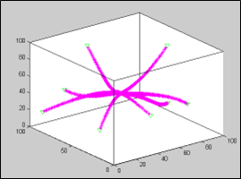
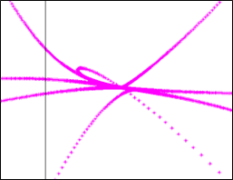
We observe that all the robots reach a common point and stop. So, the system is Lyapunov stable in the sense that all robots always end up in the desired state regardless of the initial conditions (initial robot positions).
[1] Gazi, Veysel. “Swarm aggregations using artificial potentials and sliding-mode control.” IEEE Transactions on Robotics 21 (2005): 1208-1214.